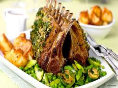

~TheSavoury~
Ingredients
How to prepare a lamb of rack for Easter? Here is an easy recope to roast a lamb rack, the perfect main course if you're planning an Easter meal with family.
Heat the oven to 150°C (130°C in a fan oven), gas 2. Cut the ends of the ribs off cleanly and season with ground black pepper. Mix together the breadcrumbs, parmesan, herbs, shallots, half the butter and the egg. Blanche the beans and the savoury in boiling salt water for 5-7 minutes. Drain and quench in ice cold water. Fry the meat in hot oil on a roasting tin, season with salt and roast for 30-35 minutes. Season the potatoes with salt and ground black pepper and fry in 2 tbsp hot oil with the remaining rosemary sprig for around 10 minutes until golden brown. Remove the meat from the oven, brush with mustard and spread the herb mixture on top. Roast for a further 5 minutes at 220°C (200°C in a fan oven), gas 7. Then cover with tin foil and leave to rest. Fry the courgette and the leek in the remaining butter, add the peas and beans and season with salt and ground black pepper. Serve the meat, vegetables and potatoes on a preheated platter.